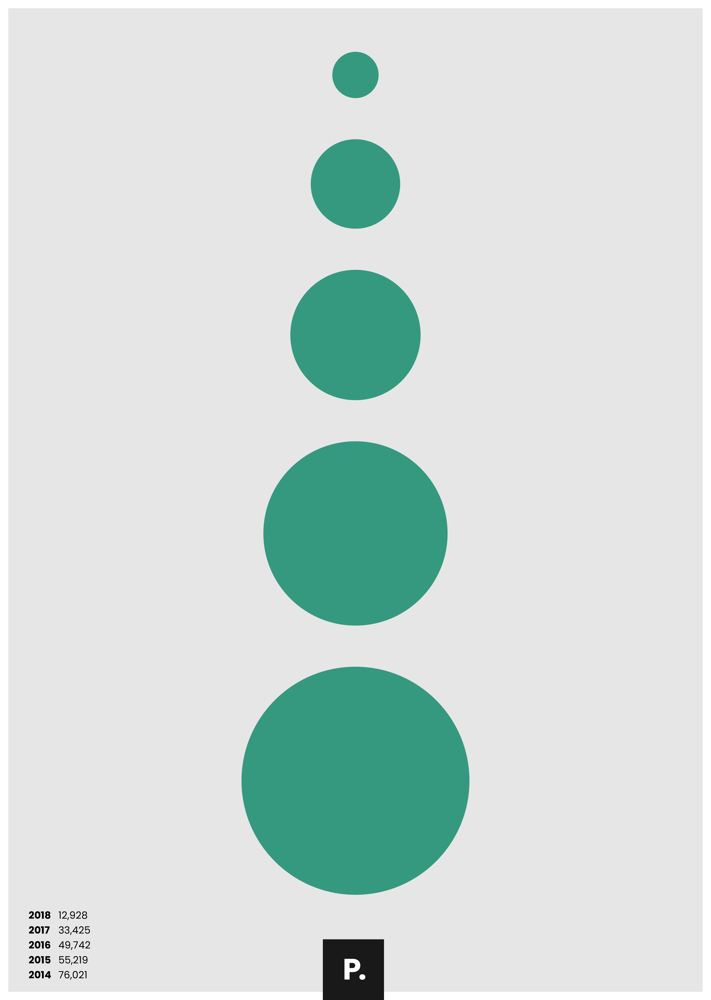
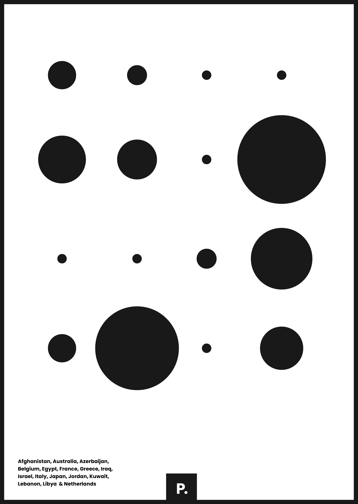
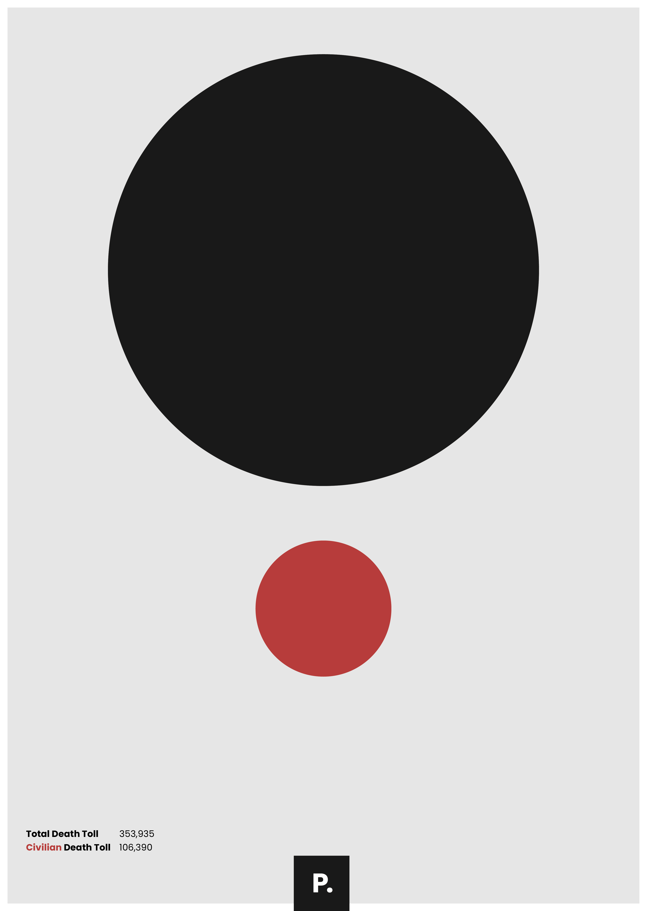
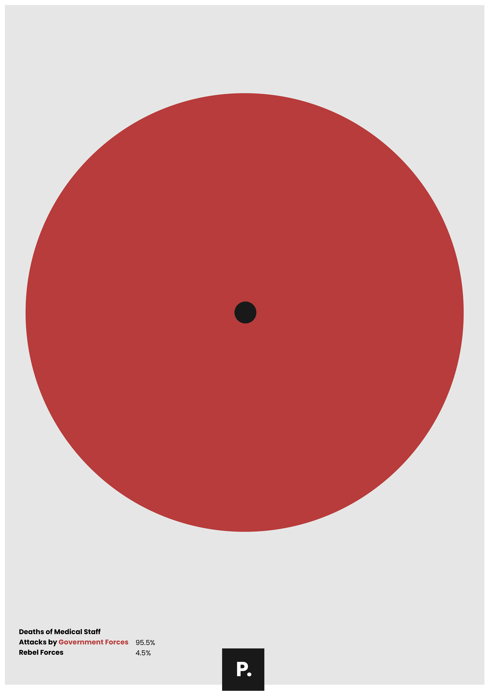
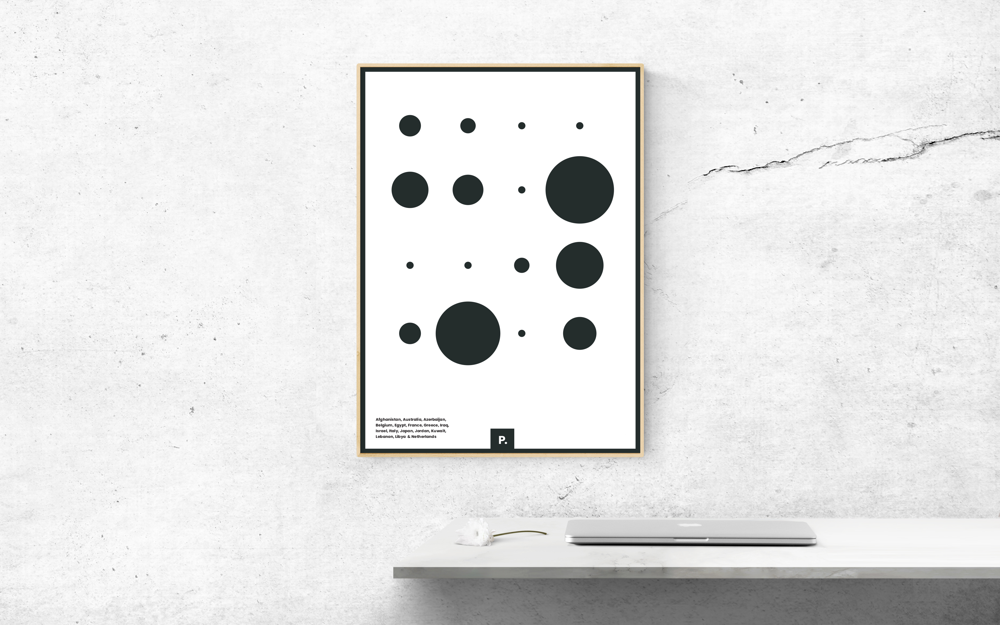

@MrRobSimpson
Designer @eyekiller | Studying Interaction Design in Belfast | #ixdbelfast
Creator of Policom.Syria Civil War: Circles
Total Death Tolls: Yearly
Using a simple shape, the circle, I illustrated some numbers in regards to the Syrian crisis. This first visual shows the death tolls, in total, per annum.
Deaths by Country
This next visual depicts the amount of people who died from just a half of the nationalities caught up in the crisis. The bigger the circle, the bigger the number.
Total death toll/Civilian death toll
This next visual displays the total number of deaths in contrast to the amount of Civilian deaths.
Total death toll/Civilian death toll
Finally, I display the numbers from the medical workers' deaths and who they were from.
I really hope that these visuals at least encourage some form of realisation as to what is happening. Just because we can't see it, it does not mean it isn't happening. If you'd like to find out how you can help this cause click here